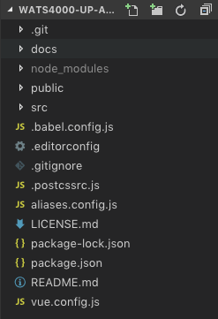
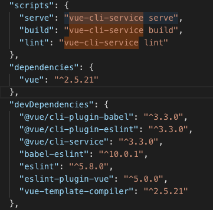
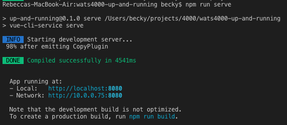
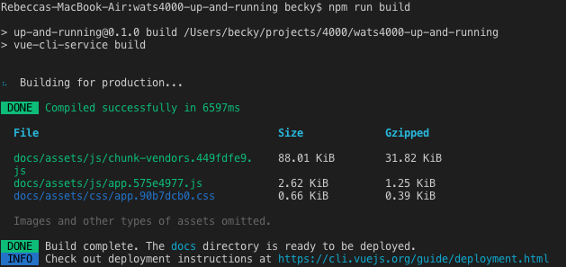
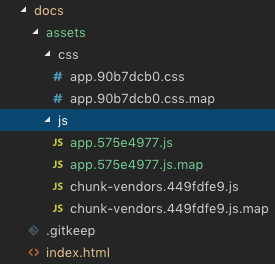

Project: Testing the Workspace
In order to determine whether our development environment is set up properly, it's useful to try cloning and running an existing project. Work along with the following directions to test your workspace.
This project uses the WATS 4000: Up and Running repository.
Fork and Clone
You will need a Github account to fork the repository. Visit the repository homepage and click the "fork" button. Once you have completed forking the repository, you can clone it to your local development environment. This will copy all the files from the repository to your workspace.
Install Dependencies
The package.json file in the root of your project contains information for retrieving software from npmjs.org. dependencies are the packages that will be used by your code and devDependencies are the packages that will be use to build your code into static files.
In order to get this project to work, we need to install the dependencies. To do so, run the npm install command in the project repository. You should see output in the form a a directory called node_modules indicating that NPM has installed quite a few packages (this may take several minutes to complete). The node_modules directory can be quite large and there is no reason to save it on github.com, so we include it in a .gitignore file. You may notice in your IDE, depending on how it is configured, that the node_modules directory is a lighter color indicating it won't be pushed to github.com.
Once you have finished installing dependencies, take a look at the project itself.
Project Files

Project Folders after cloning and installation of dependencies.
You will notice several key parts of the project here. Let's take a quick trip through what we see in this list and identify some of the key parts of the application. We will go quickly through this for now because we will revisit almost all of these pieces as we work through more details of building applications.
.git– This is a hidden directory and it contains configuration information about your git project. You can list the contents of the config file in .git to see if you are connected to a remote repository on github.docs– This directory the static files that will be used to serve your application on gh-pages. This directory is built by usingvue CLIcommands and configuration information stored invue.config.js.node_modules– This is where all of the dependencies the site uses are stored during development. These are the files that are downloaded from npmjs.org when you runnpm install(Check it out; there are lots of these!)public– This directory contains the index.html and other static assets that are used to build your app. These assets can include files to be used as favicons.src– This is where the custom code we write for this unique project goes. Look inside and you'll see the components that make this site work.babel.config.js– This is a configuration file for the babel code transpiler. Babel is a dev dependency that is used to turn code written in.vuefiles into static HTML/JavaScript/CSS files..editorconfig– This is a hidden config file for the Visual Studio Code editor. Depending on which editor you are using you may see a file with a similar purpose but named differently..gitignore– This is a hidden file that contains names of files and directory which will not be pushed to git..postcssrc.js– This is a hidden file that contains a module that will help build the CSS files.aliases.config.js– This is a config file that tell Vue.js that@and@srcare aliases for thesrcdirectory. This is a coding convenience.LICENSE.md– This project using and MIT license.package-lock.json– This file is created, if it doesn't already exist, when you runnpm install. It describes the exact code tree that was generated by the last call tonpm install.package.json– This file contains the listings of npm dependencies and devDependencies. When younpm install <package>a new package it gets recorded in this file. The file also contains ascriptsobject that defines the command line scripts that can be run to build for development and production.README.md– This file contains a description of the project and instructions for working with it.vue.config.js– This is a config file used to specify options for the build. This is where you find the option to build to thedocsdirectory and you can turn the linter off in here. Any other build options can be added to this file.
Run the Dev Server
The npm run command looks at the scripts object in package.json to find the commands to run. If you look at the package.json script for this project you can see that it the commands map to a call to the vue-cli-service program. You can also see that this program is installed locally when you run npm install because it is in the devDependencies object.

We use the serve script to run our Dev Server.
As we work, we want to run the development server. When you do, you should see the app running. You can check it out in your web browser and test out the simple functionality.
To start the dev server, go to the terminal and type:
npm run serve
The output of this command indicates that we have a dev server running at http://localhost:8080. This is an in memory server and there are no files written to disk.

While we have the dev server running, we can open up our editor and modify some of the files. If we open src/App.vue we will see the template that includes the <h1> tag for the page. We can modify the contents of that tag and save the file to see the live reload capability of this development server. (We can also play with the CSS in this file if we wish.)
Note: We have not gone over how a Vue.js app works yet, but it's still worthwhile to poke around and see. If things break, we can always reset your clone of the repository.
Once we done experimenting with the development server, we can quit the server using the ctrl-c keyboard combination in the terminal.
Build the Site
As we mentioned earlier, the goal of using development environments is that we can work with source code that is more friendly and still deliver highly optimized code to our users. To get a feel for how this works, run the following command:
npm run build
This command builds and compiles all the code in our project and puts it in a directory called docs in the root of the project.

Webpack Build Report in Terminal
In the terminal view of the Webpack Build Report we can more easily see that webpack has combined files and organized them by "chunks". We can see the file size and the file name that has resulted from the processing of these files.
If we look inside the docs/ folder, which was created inside our repository by the build process, we can see that those files have been saved under dist/static/ (as well as the other files that make up our site.

Files in the docs/ Folder
These files are the results of combining many source files into just a few files for delivery to our users. There is also some transpiling taking place to turn a .vue file into HTML/CSS/JavaScript. This cuts down on the number of request a user makes to the server in order to download our application. We also see that the files have been "versioned" with the addition of "hashes" that represent a unique version of that file. These hashes are updated when the contents of the files that are being combined changes. Changing the names of these files when the contents change helps us avoid issues of browsers and networks caching files and serving users old code. (We never want to tell a user to "clear the cache" in their browser again!)
Continue Exploring
It's worthwhile to continue exploring the code to get a better understanding of what parts we're dealing with. Think of this as moving into a new neighborhood: There are already buildings and streets here, so we don't need to build everything from scratch. But we do need to find our ways and get comfortable in this new environment.
Much of the rest of this book will serve like a GPS as we learn about building applications. We will get details that should make all of this doable at a fundamental level. But please take detours and try things outside what is prescribed in this book.
If we don't take some ambling walks around our new neighborhood we will never find the better paths, interesting scenery, or potential for enjoyment that exists.